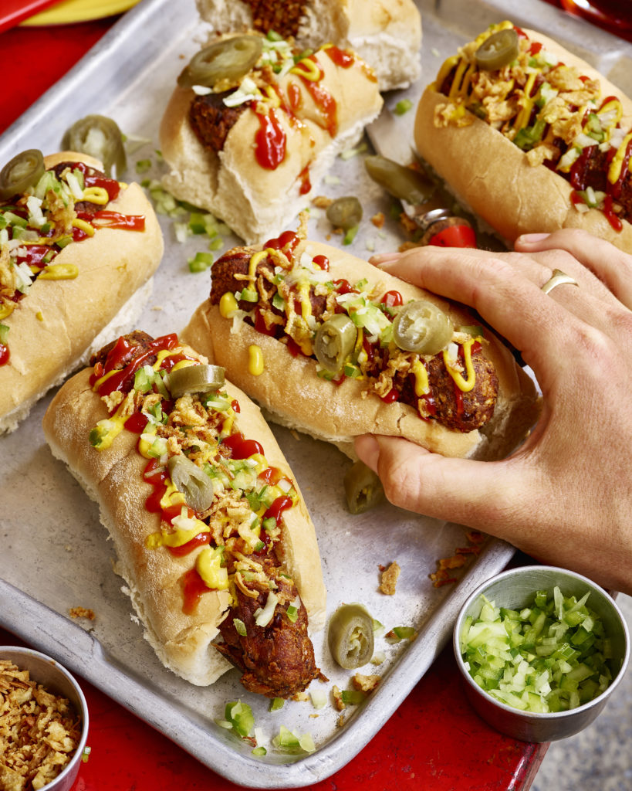

Vegan Lentil Hotdog

Miss the feeling of munching on a weiner during a ball game? Fear not,
our vegan lentil hot dogs will fill the void that's been missing all this time.
Ingredients
- 1 tbs Olive Oil
- 1/2 an Onion, Chopped Small
- 2 Clove of Garlic, Minced
- 2 Portobello Mushrooms, Chopped Small
- 100g Walnuts
- 1 Pouch Merchant Gourmet Puy Lentils
- 100g Cooked Sweet Potato
- 1 tbs Chipotle Paste
- 1/4 tsp Sweet Smoked Paprika
- 1/4 tsp Dried Oregano
- 2 tbs Tomato Purée
- 1 tbs Balsamic Vinegar
- 5 tbs Heaped Plain Flour
- 25g Dried Breadcrumbs
- 1/4 tsp Cracked Black Pepper
- 1/4 tsp Sea Salt
Optional Garnishes
- Hot Dog Rolls
- Mustard
- Ketchup
- 1/2 an Onion, finely chopped
- 1/2 a Green Pepper, finely chopped
- Crispy Onions
Steps
- First up sauté the onion, garlic & mushrooms over a medium heat in a little olive oil until golden, be sure
to make sure all the liquid has evaporated from the mushrooms. Once sautéed, transfer the mix from the pan
to a bowl.
- Add the walnuts to your food processor & blitz them to a crumb. Next add the lentils & sweet potato to the
food processor, pulse 2-3 times to lightly break up the potato & lentils.
- Add the walnuts, potato & lentils to the bowl with the mushrooms, onion & garlic, followed by all the
remaining sausage ingredients then mix well with a spatula. The sausage mix should be relatively dry but if
your mixture feels too wet, add a little more flour or breadcrumbs.
- Lightly flour your hands then form the mixture into around 8-10 sausages.
- The sausages are now ready to be cooked on your bbq, or alternatively in a non stick frying pan or oven.
- For bbq cooking, I recommend cooking the sausage over hot coals rather than a naked flame, make sure your
grill is clean and greased well with a little oil. Grill the sausages for 7-8 minutes turning them carefully
every now and then.
- Alternatively for cooking them in a pan, pre heat your non stick frying pan over a medium heat and sauté the
sausages for 8-10 minutes, turning them over every now and then.
- I serve my hot dogs topped with all my favourite trimmings such as, finely chopped onion & pepper, crispy
onion, mustard and ketchup.
The sausages can be pre made and stored in your fridge for up to 2-3 days before cooking.
Go back to the Home page